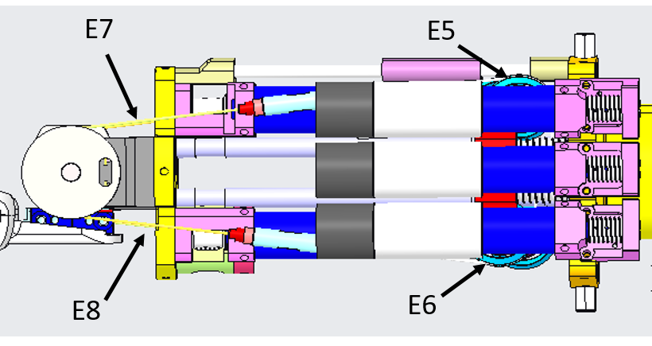
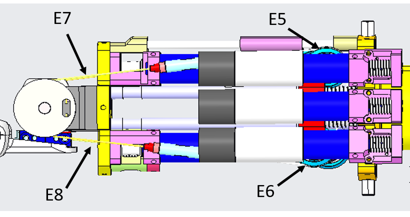
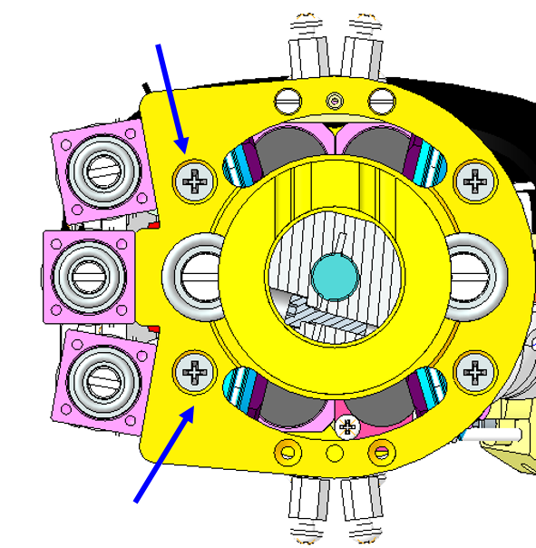
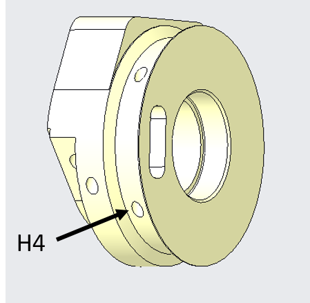
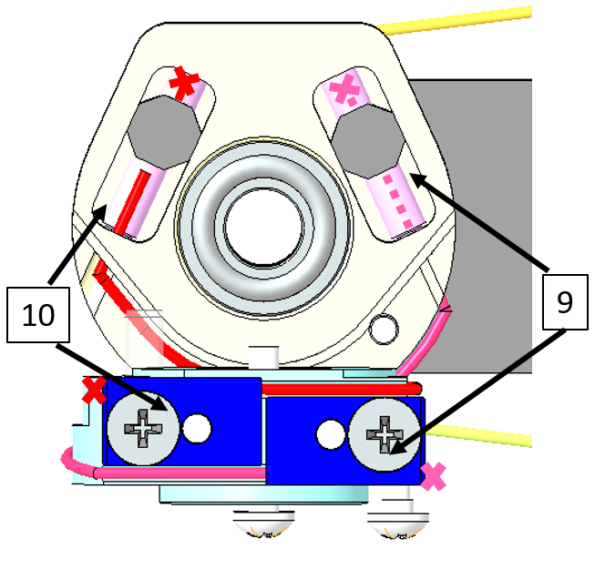
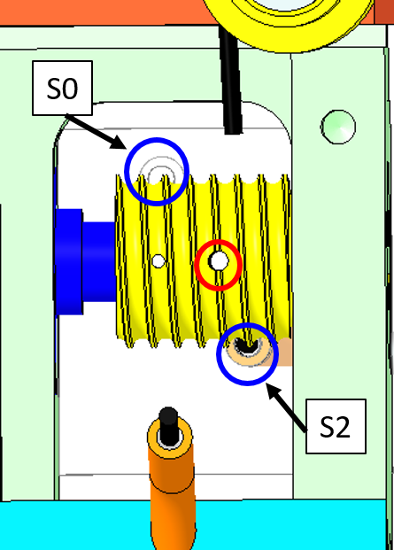
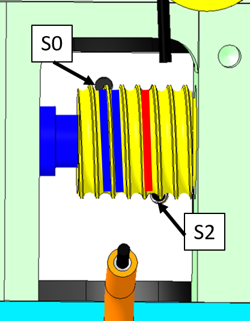
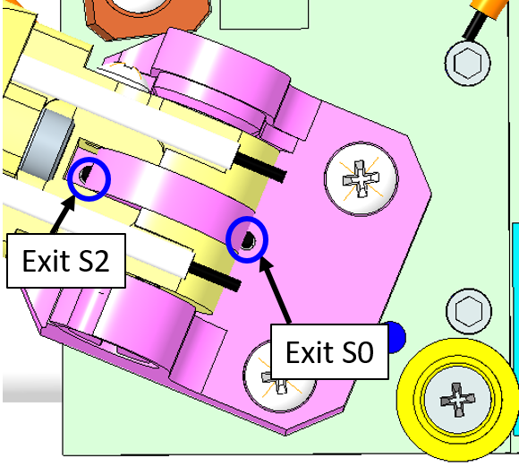
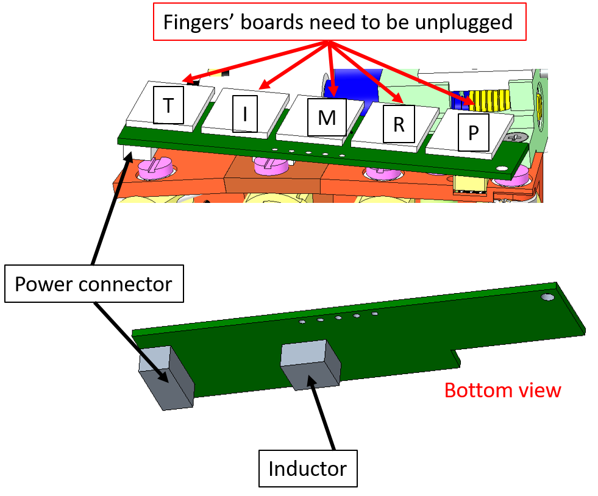
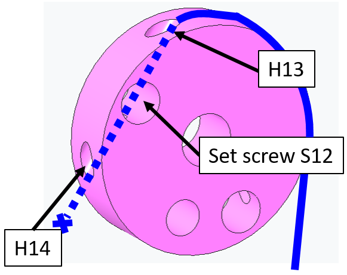

wrist hand cabling V1
1 WRIST
1.1 Wrist motor tendons
1.1.1 Location & identification
From the pictures below you will be able to locate and identify the tendons inside the Right Forearm building the active part of the wrist tendons.

From the pictures below you will be able to locate and identify the tendons inside the Left Forearm building the active part of the wrist tendons.
 

Note
Note that the cabling of (1,2) & (5,6) and (3,4) & (7,8) is identical for symmetry.
Note
Note also that cable E1 & E2 are indeed a one cable with two different labels at its extremities, as we will see below.
1.1.2 Cabling
First of all, in order to increase the cable tension it is useful to unscrew the 2 couples of screws located as shown in the pictures below, depending on which cables we are working on. After having completed all the described operations the cable tension can be increased by tightening the screws again.
| Left arm palm down | Right arm palm down |
|---|---|
|  |
In the case you found out that one of the 8 cables of the wrist broken, here the sequence you need to follow to restore it.
| pictures | step by step guide |
|---|---|
| |
FIRST THING: which side of the wrist is broken? The internal (refer to cables 1 to 4) or the external one (refers to cables 5 to 8)? Can you see the differences? YOU may have guessed on your own but the answer is only that the external one is beneath the 3 proximal motors which makes it more complicated to reach and repair; apart from that it is exactly identical - so to proceed we will first see how to move the proximal motor, if you need to repair the external wrist motor, and follow up with the explanation of the tendon in a more generical way, as both motors are wired in the same way. If you need to repair tendons from 1 to 4 please just proceed to STEP 2 |
  |
STEP 1: remove the 6 screws M1.6x5 and flip over the 3 motors to be able to access visually beneath them. |
 |
STEP 2: remove or loose the 2 screws M2.5x8 holding the motor. From now on you can work freely. |
 |
STEP 3: remove the broken part of the cable still inside the tensioner. !!!WARNING!!! once removed, either you put back the brand new cable inside or else just simply gather the part removed from the tensioner assembly and re-screw it back in until further notice in order to DO NOT LOSE PIECES!!! |
| We can now start wiring!!! | |
 |
STEP 4: Let's begin with the motor pulley. Take a piece of uncoated cable (more or less 20 cm). Let its extremities be E1 and E2. Pass the cable trough the hole (H) in the pulley. Block the cable on the hole H with some cyanoacrylic glue. |
  |
STEP 5: Twine the cable on the pulley. The number of turns around the pulley has to be decided on the basis of the entrance and exit pulleys: the cable should be tangential to the pulleys. Block the cable on the motor with some tape. This will allow you to maintain the cable positioned on the pulley. This wiring is identical for the cables E5-E6. |
  |
STEP 6: Wrist pulley (E3-E7): take a piece of cable. Tie in a knot at one extremity. Take the other extremity (E3) and pass it trough the hole H3 on the pulley on the wrist side. Exit the pulley trough the hole H4. |
 |
STEP 7: Wrap the cable as shown. The wiring of E7 is identical. |
  |
STEP 8: Wrist pulley (E4-E8): take a piece of cable. Tie in a knot at one extremity. Take the other extremity (E4) and pass it trough the hole H1 on the pulley on the wrist side. Exit the pulley trough the hole H2. |
 |
STEP 9: Wrap the cable as shown. The wiring of E8 is identical. |
| We are finally getting to an end. Now that you know how to re-wire every single cable of the wrist you need to insert the tensioners. |
|
  |
STEP 10: Pass E3 through the tensioner (LHS1) and tie a knot (KN3). This knot should be positioned taking into account the length of the tensioner. Remove E1 from the tape that blocks it on the motor and pass it trough the tensioner (RHS1). Tie in a knot (KN1) on E1. This knot should be positioned so as to have the tensioner in the middle of the admissible range of movements. Repeat for cables E2 &E4. |
 |
STEP 11: Tight the tensioners by screwing in the extremities. |
1.2 Wrist passive tendons
1.2.1 Location & identification
From the pictures below you will be able to locate and identify the 2 tendons inside both the Right Wrist and Left Wrist building the passive part of the wrist movements.
The pink cable is cable 9 and the red one is cable 10.
| Left wrist | Right wrist |
|---|---|
 |
 |
1.2.2 Cabling
Here the sequence you need to follow to restore the 2 little cables from the base of the wrist - we will write down the procedure using the left arm as base pictures but use the previous pictures above to mirror the explanations.
Which is the length of each cable? (Need measurements in lab)
| pictures | step by step procedure |
|---|---|
|  | !!!KEEP IN MIND - whenever you need to replace one of the 2 cables you FIRST need to release the tensioners . Just put one side of the crimp of each cable inside its tensioner and follow the path until its blue stopper. The X (cross) in the pictures represents a knot at the end of the cable. |
| Cable 9 needs to be inserted inside the hole H1, while cable 10 in the hole H2. | |
 |
To block the cable ends you first need to unscrew the stopper (red circles), then insert the cable and screw it back. Tie in a knot in order to prevent any cable slippage. |
 |
Once done: tighten the screws of both tensioners until you reach a strict tensing on the cables. |
2 HAND
2.1 Location
The Hand wiring consists of the Thumb Oppose and the Fingers Abduction. In the picture below you can see where the cables and their respective motors are located (Left hand palm down).

The minimum requirement to start recabling those 2 joints is:
| IITCODE | Alias | Description |
|---|---|---|
| 1815 | CG077063 | Stainless steel microcable, cable construction 7x7mm, nom. dia 0,63mm, not coated, AISI 316 |
2.2 Thumb Oppose
Here are the instructions for rewiring the Thumb Oppose Joint at the base of the Left Hand.
| pictures | step by step guide |
|---|---|
 |
STEP 1: The only way to start correctly this wiring is to remove the palm. Please remove the 3 screws M2x6 inside the palm (circled in red) and the 2 at the base of the wrist M1.6x4 (blue). |
  |
STEP 2: we will now focus on the wiring along the pulley. Cut ~ 40cm of cable. Move with a screwdriver the pulley in order to have the hole (red circle) flat horizontally. Insert the cable, equilibrate evenly the cable on both sides of the pulley. The cable exits are S0 and S2 (blue circles). |
|  | STEP 3: Make 1 turn around the pulley CCW to go into S2 ball bearing side 2 turns around the pulley CW to reach S0 motor side. !!!TIP: You may find convenient to remove the plate to round the cable around the pulley more easily. |
|  | STEP 4: Insert both side of the cable inside S2 and S0 until they sprout out from the palm side |
 |
STEP 5: Insert the cables in the central pulley at the base of the thumb as shown. |
 |
STEP 6: Use a 0.7mm hexagonal key (or screwdriver) to block the cables with the set screws. |
| !!!!CONGRATULATIONS YOU ARE DONE!!! |
2.3 Fingers Abduction
Here are the instructions for recabling the Fingers Abduction joint of the Left Hand. For the right one the procedure is mirrored.
| pictures | step by step guide |
|---|---|
| First we need to remove the hand dorsum: remove the screw M2x6 holding the dorsum cover and turn upside down the cover from the external part. | |
|
Now it is necessary to remove the palm. Please remove the 3 screws M2x6 inside the palm (circled in red) and the 2 at the base of the wrist M1.6x4 (blue). |
 |
Once removed the palm, remove the overall 4 set screws. Use a 0.7mm hexagonal - screwdriver or key. |
| Remove the overall remaining pieces of the broken cable before starting to restore it and inspect inside the cage. | |
 |
Remove every single board above the knuckles - the MAIS board (green) and the fingertips Hall sensors (white). |
|  | In details: 1. Unplug every single chipset from the main board. !!!TIP: Please write down with a marker the initial of the finger chipset you unplug - it is sometimes messy when remounting everything to find out which chipset is for which finger 2. Remove the power connector 4. With caution please remove the MAIS Board (by removing its tape) - on the bottom side of the board there is an inductor that sometimes got broken when remove carelessly. Let's get to business and Let's start wiring! |
 |
Let's start from the back of the hand. Take a piece of cable (more or less 40cm) and pass it trough the central hole in the pulley (red circle). Optionally you can block the cable on the pulley putting a drop of cyanoacrylic glue into the hole. |
  |
Twine the cable on the pulley. The number of turns around the pulley has to be decided on the basis of the entrance and exit holes: the cable should enter the holes tangentially. Thus, insert the cable extremities, into the two holes H1 and H2 (red circles). |
 |
Pass one cable extremity trough the sheath T1 and the other one trough T2. Position the extremities of the sheaths on the sockets of the 2 exit holes in the motor support. Note: the sheath extremity should be inserted correctly in its socket. |
 |
Focusing on the side of the cable inserted in the sheath T1, pass it through the tensioner and insert the sheath extremity in the tensioner socket. Then, continue the path inserting the cable through the sheath T3 until reaching a hole H3 in the hand frame (blue circle). Finally, insert the cable in the hole and position the extremity of T3 on the socket in correspondence of the hole. |
| Twine the cable around the pulley at the base of the index finger. Pass the cable ending trough the hole H7 and exit from H8. Block the cable on the pulley with the screw S9. Tie a knot about 1 cm away from the pulley. | |
 |
Going back to the other cable extremity inserted in the sheath T2, position the extremity of T2 on the socket in correspondence of the hole H4. Finally, insert the cable in the hole. |
 |
Twine the cable around the pulley at the base of the pinkie finger. Pass the cable ending trough the hole H9 and exit from H10. Block the cable on the pulley with the screw S10. |
  |
Twine the cable around the little pulley and then around the pulley at the base of the ring finger. Pass the cable ending trough the hole H11 and exit from H12. Block the cable on the pulley with the screw S11. |
 |
Pass the cable trough the hole H5 and the sheath T4. Position the extremity of the sheath on the socket of H5. Note: the tube extremity should be inserted correctly in its socket. Pass the cable trough the hole H6 and position the extremity of T4 on the socket of H6. |
|  | At this point we close the loop, reaching again the first pulley located at the base of the index. Twine the cable around the pulley and pass the cable ending trough the hole H13 and exit from H14. Block the cable on the pulley with the screw S12. Tie a knot about 1cm away from the pulley. |
| Now unscrew all the screws blocking the cable on the pulleys (S9, S10, S11 and S12). Note that this operation can be done only at a specific configuration of the fingers. At this configuration the screws are accessible thanks to suitable holes on the palm. | |
 |
In the picture you can see the final cable configuration on the first pulley at the base of the Index. The 2 parts of the cabled are represented by different colors. Now tension the cable: 1) Pull the blue cable from its ending. Check that the sheath is inside its sockets at H1 and H3 and block the cable extremity with the screw S9. 2) Pull the red cable from its ending. Check that the sheath is inside its sockets at H4, H5 and H6. Block the cable with the screw S10, S11 and S12. |
 |
Final test: Use the head screw from the pulley motor to check if the fingers get opened-closed whenever you turn it CW or CCW. |
| !!!!CONGRATULATIONS YOU ARE DONE!!! Use every unmounting step to put back in place every part of the hand. |
Tip
Tensioning the cable is very important. Even when all the screws are not tight, it may result difficult to tension the cable in all of its parts. This is due to the sharp edges of the pulley which do not allow a uniform distribution of the tension.

Tip
For the Fingers Abduction always start from the index as previously shown.
Tip
Each pulley at the base at the fingers has a Pin. If passing trough the holes is complicated, you can remove the finger from the palm. After this operation the pulley can be made more accessible by rotating it around its Pin. In the picture below you can see the pin of the Index pulley.